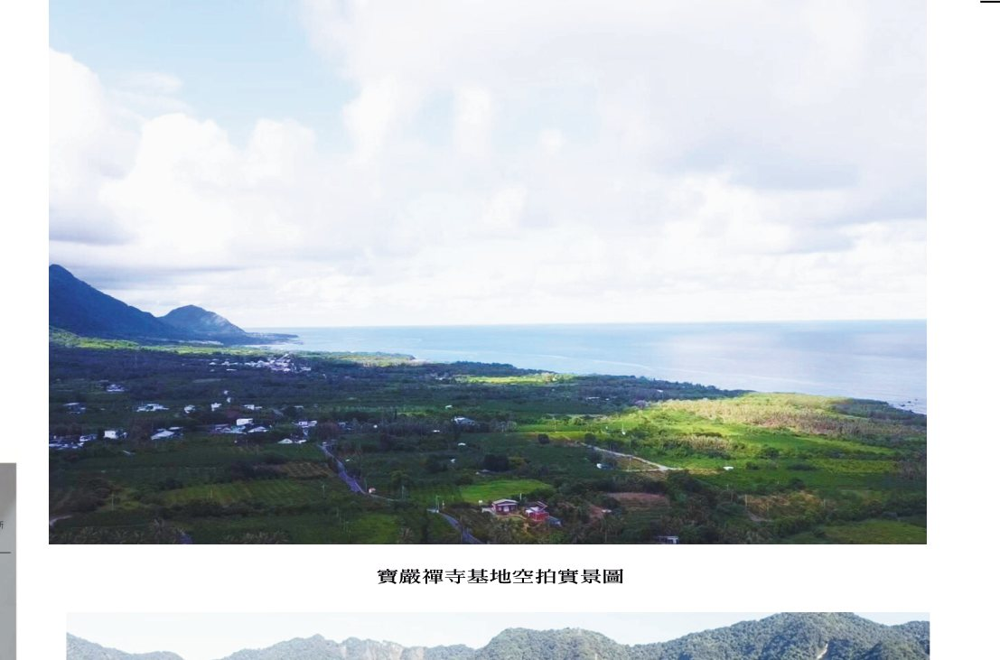

寶嚴山寶嚴禪寺 動土大典
2026 年 12 月 26 日（六）・台東都蘭 開放報名參加

- 活動日期
- 2026 年 12 月 25 日（五）至 12 月 27 日（日）
- 動土大典
- 2026 年 12 月 26 日（六）
- 活動地點
- 台東都蘭
- 行程天數
- 三天兩夜
- 交通安排
- 可於報名表單登記專開列車需求及上車地點
- 參加方式
- 歡迎攜伴參加、全家同行
- 報名期限
- 報名至活動前持續受理，敬請及早報名，以便安排保險、住宿及車位
為辦理旅遊平安保險並安排住宿與車位，敬請於報名前備妥下列資料：報名者本人姓名、電話、LINE ID／Whats APP ID／微信 ID、Email 信箱（若本人沒有信箱，請填家人或聯絡人的）、證件（身分證、居留證或護照）之類別與號碼、出生年月日，以及緊急聯絡人姓名與電話；如有家人同行，另需每位同行者之姓名、與功德主之稱謂關係、電話、證件類別與號碼、出生年月日及性別。資料齊備後，敬請一次填寫完成。
▶ 報名影片教學
影片長 3 分 27 秒，以手機示範「動土大典報名」表單的填寫步驟。
「報名影片教學」示範報名表的填寫方式；「動土大典報名」為參加大典，「報名志工」為擔任大典志工；「登記牌位暨報名三皈五戒」連往寶嚴禪寺報名系統，以姓名與手機號碼登入後辦理。
報名後，請務必與分院法師聯絡，請法師將您加入聯絡群組。
建寺護持與大典報名分屬不同事項，敬請分別辦理。護持方式請見護持專區。
臨濟祖師曾在寺門前親手種下一棵松樹。弟子問他，為何要種這棵樹？祖師回答：「一與山門作境致，二與後人作標榜。」
我們想建造的，是一處從 0 歲到 100 歲，每一個生命階段都能走進來的地方。孩子可以在這裡種下善良；青年可以在迷惘中找到方向；成年人可以放下疲憊，重新整理生命；年長者可以安住身心，坦然面對無常。
十年樹木，百年樹人，千年道場。道場的價值，也因此超越一個人的生命。
歷經多年籌備與眾人願心匯聚，寶嚴山寶嚴禪寺將於 2026 年 12 月 26 日，在台東都蘭舉行動土大典。當第一鏟土落下，我們奠定的是一座千年道場的初心與未來。
本次特別規劃三天兩夜行程，誠摯邀請認同這份願景的您，帶著家人與親友一同來到都蘭，在山海之間，親眼見證這個願望落地生根。
三天兩夜行程
以上為大略行程安排。大會行程仍在安排中，實際流程將視交通、天候及現場情況調整，最新內容敬請關注本網站公告。
新加坡居士六天五夜巡禮行程
以上行程均為暫定安排，主辦單位將視交通、天候及實際情況彈性調整；如有異動，將另行通知。
住宿及交通安排
凡於動土大典前圓滿功德金達新臺幣五萬元（含）以上之功德主，由主辦單位安排當地飯店兩晚住宿，並提供本人往返火車票。
隨行直系親屬或配偶可與功德主同房住宿，其住宿及往返火車票亦由主辦單位提供。
報名者若非圓滿袈裟地功德主，或非直系親屬或配偶，歡迎隨喜發心參加，每人費用新臺幣 3,000 元（含食宿及交通），請於 12 月 25 日出發前至各分院繳交。
住宿由大會統一安排當地飯店，恕無法指定；如遇不可預期之情況，大會保留調整或取消之權利，並將另行通知。
護持方式請見 護持。
常見問題
更多關於寺院理念的問題，請看 建寺 Q&A。
可以只參加 12 月 26 日動土大典當天嗎？
可以。報名表單的交通題選「自行前往」、住宿題選「自行安排」即可。
可以帶家人一起參加嗎？
歡迎攜伴參加、全家同行。報名表單可填寫家人同行人數（1～4 位；5 位含以上請與所屬分院聯絡），同行者需填姓名、與功德主的稱謂關係、電話、證件類別與號碼、出生年月日及性別，以便辦理保險與安排住宿、車位。
住宿與火車票如何提供？
凡於動土大典前圓滿功德金達新臺幣五萬元（含）以上之功德主，由主辦單位安排當地飯店兩晚住宿，並提供本人往返火車票；隨行直系親屬或配偶可與功德主同房住宿，其住宿及往返火車票亦由主辦單位提供。
專車從哪裡出發？可以自行前往嗎？
12 月 25 日分別自台北、台中及高雄搭乘專車出發。報名表單可登記上車地點，以及去程（12/25）、回程（12/27）分別是否需要；也可以選擇自行前往。
為什麼要填證件號碼？
作為保險用途，供主辦單位為參加者辦理旅遊平安保險。
沒有達到功德金門檻，也可以參加嗎？費用怎麼算？
可以。報名者若非圓滿袈裟地（建寺福田 5 萬／席）功德主，或非功德主之直系親屬或配偶，歡迎隨喜發心參加，每人費用新臺幣 3,000 元（含食宿及交通），請於 12 月 25 日出發前至各分院繳交；累計功德金請洽所屬分院查詢（電話見下）。
報名後還要做什麼？有問題找誰？
報名後，請務必與分院法師聯絡，請法師將您加入聯絡群組，後續行程與集合等通知都會在群組中發布。各分院電話：台北善首講堂 02-2577 2978、新北善覺講堂 02-2964 6617、台中 EPIC 禪藝實相人文空間 04-2328 9566、高雄圓道禪院 07-522 4676。
行程會有變動嗎？
以上行程為暫定安排，將視實際情況彈性調整；如有異動，將另行通知。